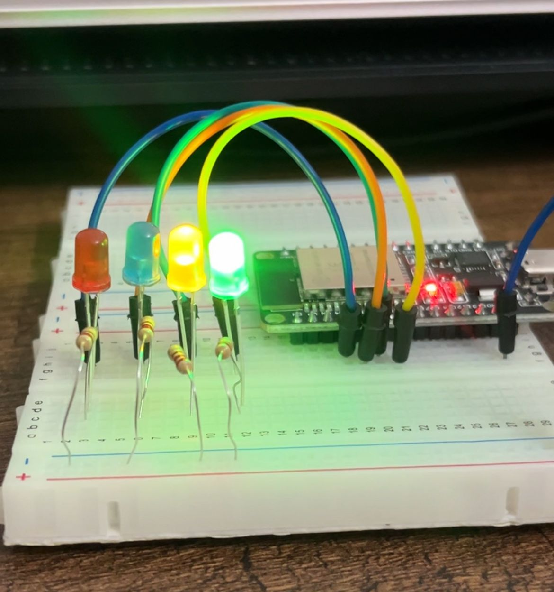

APRENDIENDO MÁS SOBRE LED´S
Este capítulo es más sencillo, y solo aprendermos sobre como conectar un led correctamente, adicionalmente adjuntaré un código para que puedas ir familiarizandote sobre como colocarlo en tu código cuando lo necesites en algún proyecto.
MATERIALES
-LEDS
-Jumpers
-Resistencias
-ESP32
-Protoboard
RECURSOS
-Usaremos arduino IDE
CONEXIONES
-Los leds estarán conectados al pin,32,33,25 y 26.
-Conecta el otro extremo del led a una resistencia, asimismo, la resistencia
conectada a tierra.
RESULTADO

CÓDIGO
void setup() { pinMode(32, OUTPUT); pinMode(33, OUTPUT); pinMode(25, OUTPUT); pinMode(26, OUTPUT); } void loop() { digitalWrite(32, HIGH); digitalWrite(33, HIGH); digitalWrite(25, HIGH); digitalWrite(26, HIGH); delay(1000); digitalWrite(32, LOW); digitalWrite(33, LOW); digitalWrite(25, LOW); digitalWrite(26, LOW); delay(1000); }